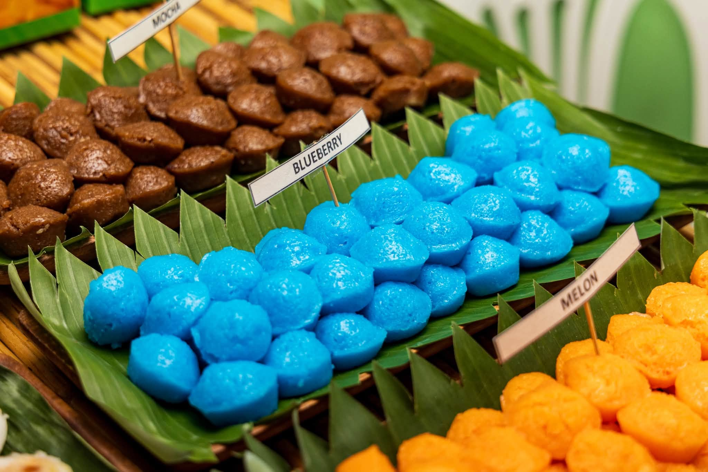
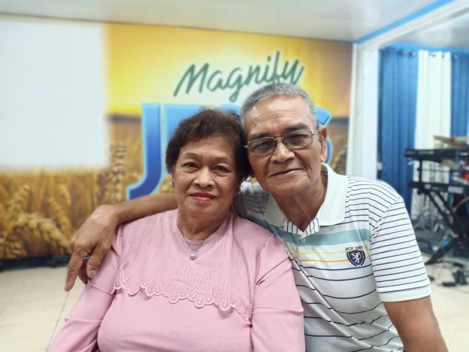

If you've ever been to Pangasinan, you've probably encountered these tiny, round rice cakes being sold in stalls in plazas, in front of churches, and in local markets. These are called Puto Calasiao, a traditional delicacy from Calasiao, Pangasinan.
Beyond the classic plain, ube, kutsinta, and cheese varieties, puto artisans have expanded the list by developing new flavors such as mango, melon, chocolate, pandan, ham w/ cheese, cheesy salted egg, and more.
Check out our special flavors by clicking this link!

Since 1976
Bella's Calasiao Puto (& Pasalubong Center) is the largest and perhaps most-well known producer of Puto Calasiao. The family business was established by Mr. Rufo and Mrs. Leonor Dela Cruz and was named after their firstborn daughter, Bellaflor. The business was started as a means of livelihood during a time when the family had limited financial resources.

Culture
Ang Puto Calasiao ay hindi lamang pagkain o kakanin, ito'y bahagi ng pagdiriwang, ng pasasalamat at ng pagkakaisa.
— Akar ng Pangasinense
Locally known as the "white gold" of the town, this treat has become a symbol of its culinary tradition and has provided livelihoods to many of its residents. This simple yet delicious treat is enjoyed by locals and visitors alike, ranging from daily snacks to being served during special occasions. This, along with the creation of new flavors, highlights puto artisans' skill, creativity, and resourcefulness while keeping the traditional delicacy relevant in the modern era. It is truly a versatile treat that continues to delight many generations.
Ikaw, anong flavor ng Puto Calasiao ang paborito mo? How about you, what flavor of Puto Calasiao is your favorite?